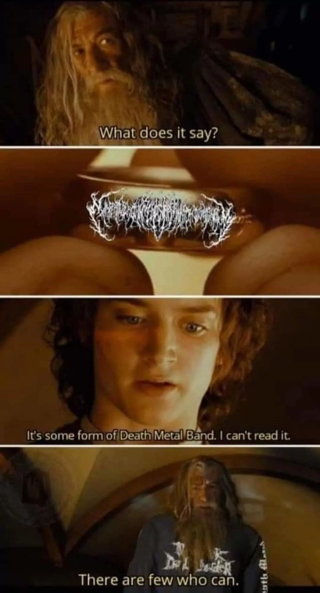

Congratulations, you have passed the second test. You have reflected, switched perspectives, thought outside the box, were open to opportunities, connected with allies, and learned the answer was within yourself the whole time. Your character is developing quickly. To proceed to level 3, send an email containing a link to your favorite Linistit song and another link to a big influence of your own. Remember to sound like a casual recommendation and not suspicious at all; they are always watching. After I receive this email, I will unlock the third level, and you will be notified promptly. Best of Luck!
